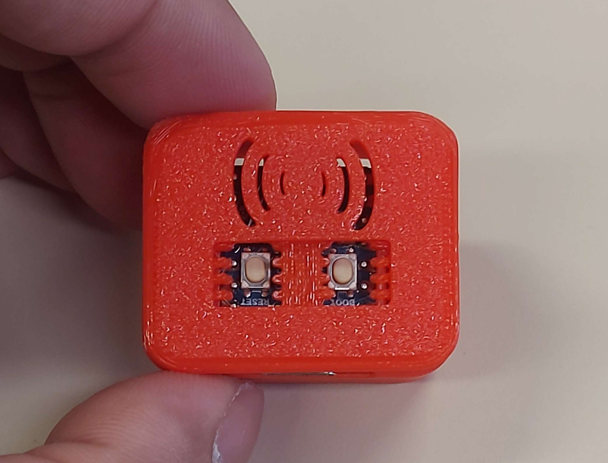
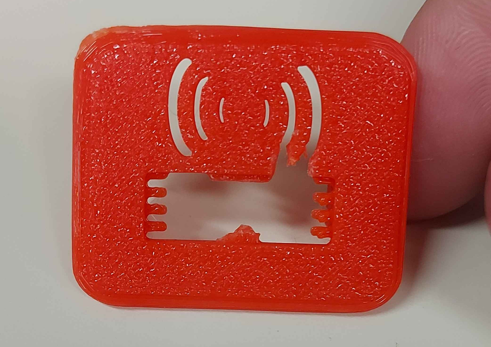
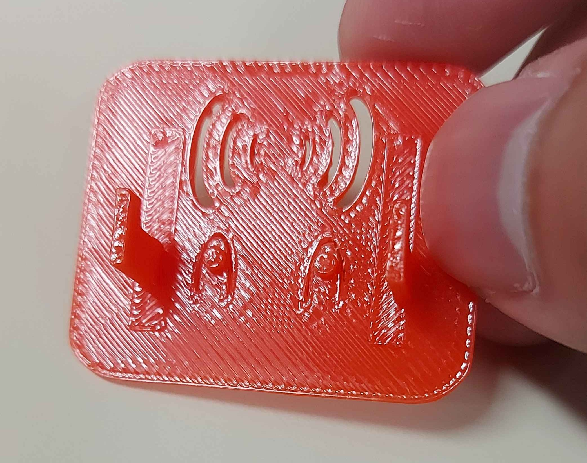
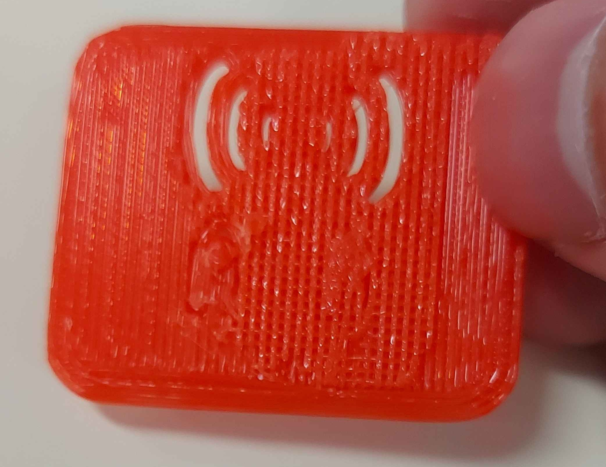
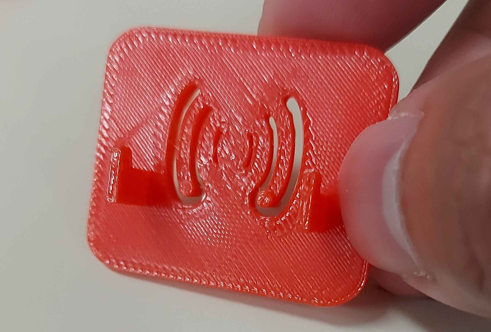
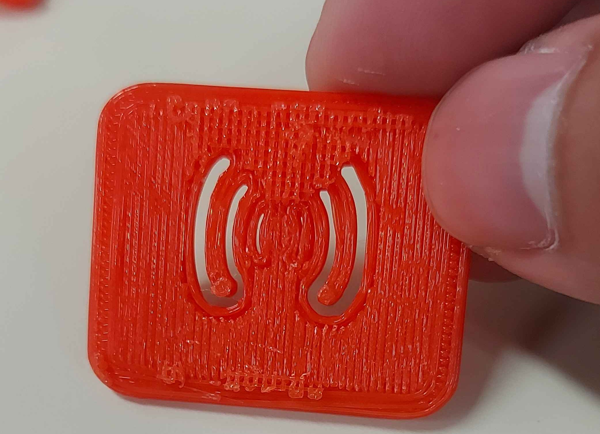

Me and the teammate had an idea. What if...


What if we just use the signal design as the button function and ventilation itself instead?
We're getting there but the ESP32 C3 Zero does not have the designated lid yet.
Me and the teammate had an idea. What if...


What if we just use the signal design as the button function and ventilation itself instead?


I mean.. reattempting what I've had done from the start is not such a bad idea but as you could see, the printer melted it again.


We've almost got it right.. but it got melted again.